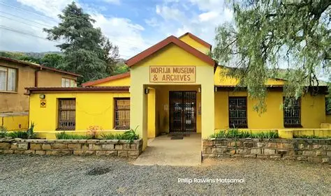

About the Event

Morija Museums
History & Significance
The Morija Cultural Festival began in 1999 to celebrate the rich heritage of the Basotho nation. Held in the historic village of Morija — home to the first mission station, museum, and printing press in Lesotho — the festival honours storytelling, indigenous music, and crafts.
Target Tourists
- Culture & heritage enthusiasts
- Adventure travellers exploring the 'Kingdom in the Sky'
- Families and educational groups
- International tourists seeking authentic African experiences

Tourists Learning About Morija History
Did You Know?
Morija is home to the first printing press in Lesotho (established 1861), where the first Sesotho language books were published. The festival celebrates this rich literary history alongside music and dance!